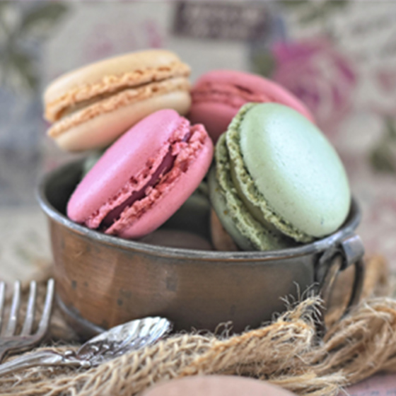

Welcome to my portfolio site

Works
Sweet Harvest Café
(架空のカフェサイト)
制作期間 約1ヵ月
企画・デザインカンプ 約1週間
コーディング 約3週間
使用したツール・言語
HTML/CSS/Javascript(Jquery)/Dreamweaver/Photoshop
カフェでゆっくり過ごしたい20〜30代女性やカップルをターゲットに、来客数増加を目的としたサイトを制作しました。「日常のちょっとした贅沢」をテーマに、落ち着いたベージュと高級感のあるワインレッドを基調にデザイン。ファーストビューでは色鮮やかなスイーツと紅茶の写真をスライドショーで流し、視線を引きつける工夫をしています。
YouTube Thumbnails
実務では、Photoshopを用いた画像加工（トリミング・色調整）や、テンプレートを使用したバナー制作を中心に、
Web用素材の作成を行っていました。
また、YouTubeサムネイル制作も週1回程度担当し、画像選定・コピー作成・レイアウト調整まで一貫して対応していました。
複数パターンを作成し、より訴求力の高い案を選定する経験もあります。
本ポートフォリオでは、権利および素材利用の都合上、実務で制作したデータの掲載が難しいため、制作フローをもとに再制作を行っています。
※使用している画像は公開されている動画よりキャプチャし、ポートフォリオ用に再構成しています。
※実在の企業・団体とは関係ありません。
Skills
HTML/CSS ★★★★★
HTMLでのコーディング、CSSでのカラー変更やflexboxを用いた配置変更、transitionでの簡単なアニメーションの設定が可能です。
Javascript/jQuery ★★★☆☆
jQueryを用いてスライドショー等の実装ができます。javascriptでのスクロールイベントやクラスの付与等は自力で設定できるよう学習中になります。現在は既に組まれているプログラムを見ておおよそ意味が理解できるレベルです。
Photoshop ★★★★★
Photoshopを使用した画像加工（トリミング・色調整・簡易レタッチ）に対応可能です。
実務ではWebサイト掲載用の画像加工や、テンプレートを用いたバナー制作を行っていました。
Illustrator ★★★☆☆
パスの描画やオブジェクトの変形など基本的な操作は可能です。
WordPress ★★★☆☆
WordPressおよび社内CMSを用いたページ更新・新規ページ作成の経験があります。
既存ページを参考に、画像差し替えやテキスト反映などのコンテンツ更新を行っていました。
Contact
お仕事のご依頼などございましたらお気軽にご相談ください。